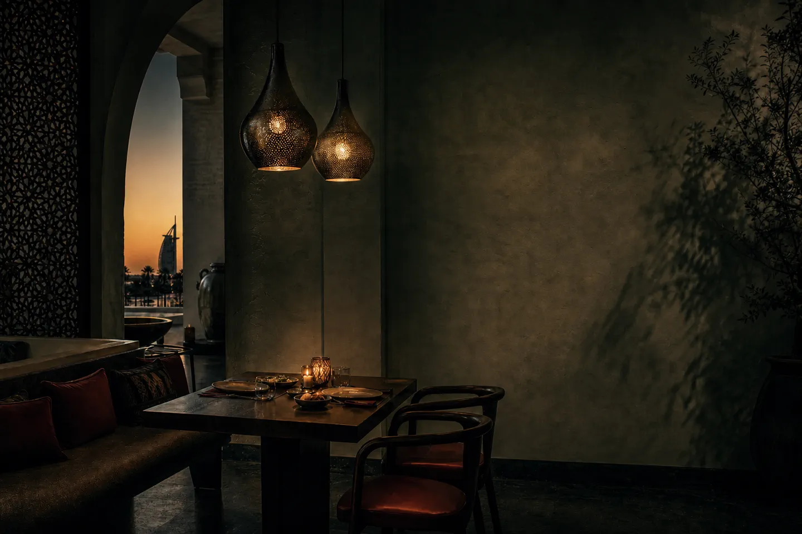
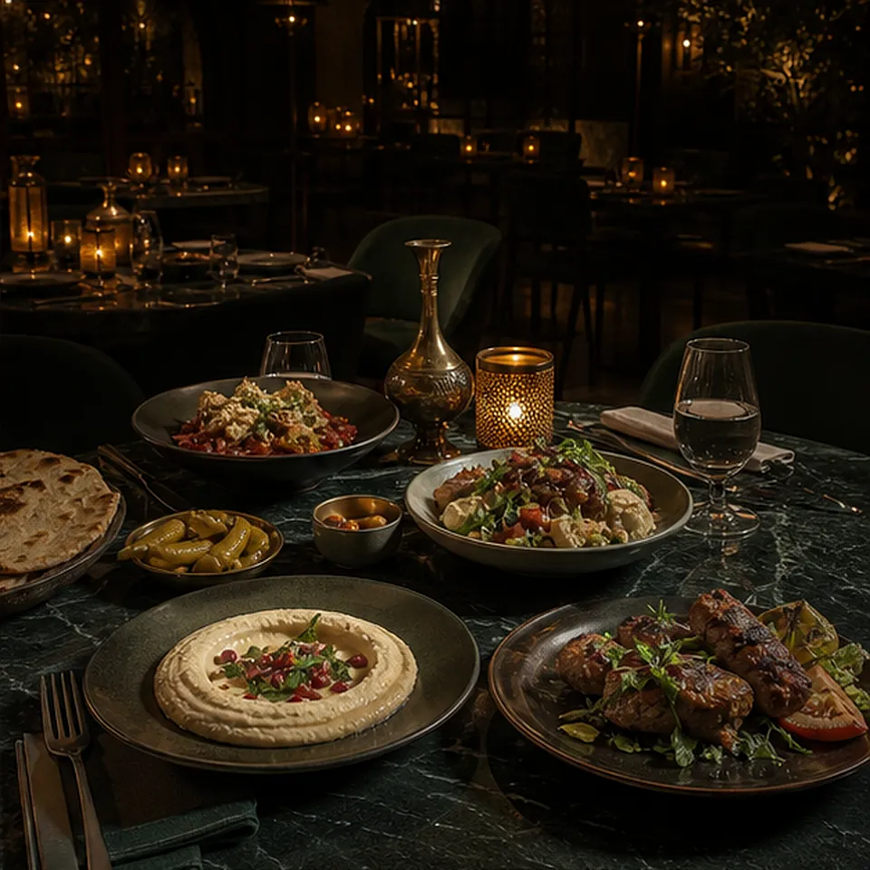
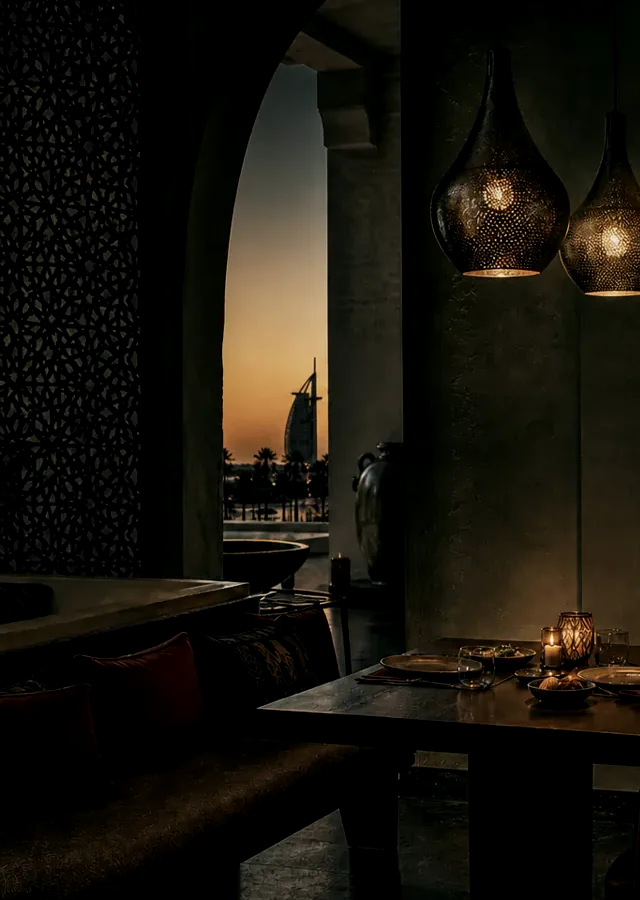

Majlis No. 8 / restaurant
MAKE THE EVENING FEEL SETTLED BEFORE YOU RESERVE.
A restaurant site should create the right atmosphere, then get out of the way: show the menu, useful availability and a focused route for private occasions.
Reserve a tableGuests can understand the room before the form, then make a reservation or private-event enquiry with enough context to move forward.
Brand feature
KEEP THE MOOD. REMOVE BOOKING FRICTION.
Dining decisions are emotional and practical at once. The experience lets guests understand the tone, then carries party size, dietary notes and event intent into the right next step.

Reservation direction
CHOOSE THE EVENING BEFORE THE FORM.
Visible times give guests a clear choice before they enter the booking flow.
Thursday / 20:00A table for two in the dining room, with menu and dietary details available before confirmation.

Choose an evening that matches the way your guests want to gather.
Hospitality route
ONE ROUTE FOR DINNER. ANOTHER FOR A PRIVATE OCCASION.
Private dining should begin with a concise brief that gives the restaurant enough information to prepare a real plan.